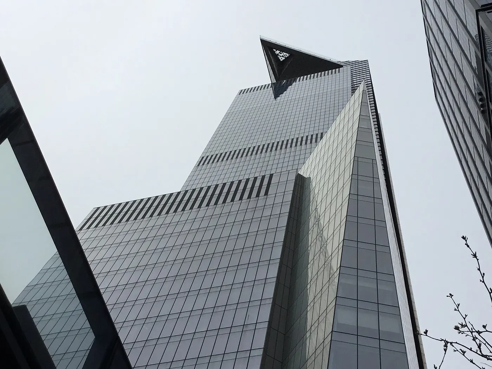

Empire State Building
The city's most recognisable address, with an open-air terrace on the 86th floor and a view that stops just short of including itself. Book it for the hour you actually want, not for the day.
Checked 2 November 2026. Prices, opening hours and transport details were verified against official sources. Things change — confirm before you book. How we check.

An Art Deco landmark that still works for a living
The Empire State Building is both a monument and an office block. You enter through a lobby of grey marble and brass, ride a lift that has been carrying visitors since 1931, and step out onto a terrace above Midtown.
The 86th floor is the one to book. It is outdoors, with a low parapet and an uninterrupted sweep from the Hudson to the East River; Central Park sits to the north like a long green mat. What you will not see is the building itself, which is why so many people pair this visit with Top of the Rock.
The 102nd floor is a separate, enclosed room reached by a second lift, higher and quieter, with glass on all sides. It is a paid add-on rather than a secret, and it adds roughly 45 to 60 minutes to the visit. Decide before you buy: the extra height is real, but the open air of 86 is what most people remember.
Why this deck, and not another
Five observation decks compete for the same ticket. Here is what the Empire State does better than the rest.
The terrace is genuinely open air
There is no glass between you and the wind. The 86th-floor walkway wraps around the building, so you can move from the Hudson side to the East River side without coming back inside.
It explains the shape of Manhattan
From 86 floors up you can read the grid at a glance: the avenues running north, the cross streets, the two rivers pinning the island. It is the clearest lesson in New York geography you will get.
It works after dark
The building stays open late. After 20:00 the office towers are lit floor by floor, the rivers go black and the streets below turn orange. The last entry is 21:00, so a late slot still gives you time.
Tickets, security and the right entrance
Book a timed slot, arrive at its start, and treat the entrance like an airport.
- Book on the official Empire State Building site. Timed entry is standard, and sunset slots sell out first, often days ahead.
- Choose the 86th floor, then decide whether to add the 102nd-floor ticket. It is a separate lift and a separate queue at the top.
- Enter at 20 W 34th Street, between Fifth and Sixth. The grand Fifth Avenue lobby is not the observatory entrance.
- Arrive at the start of your window and allow 20–30 minutes for airport-style security before the lifts.
- If you want to skip the main ticket-holder queue, the Express Pass does exactly that; it does not skip security.
Empire State Building — official tickets
The building's own ticket page sells the 86th floor, the 102nd-floor add-on, the Express Pass and combination tickets. Prices move with the date and time you choose, so the calendar in the checkout is the real price.
Book on esbnyc.comOfficial seller. We take no commission on this link.
What most visitors get wrong
-
01
Enter on 34th Street
The observatory entrance is at 20 W 34th Street, not the Fifth Avenue lobby. The queue starts outside, so in winter dress for standing in it.
-
02
Buy the 102nd floor only if you want it
The upper deck is glassed in and feels like a room with a view, not a terrace. If the forecast is murky you are paying for height rather than atmosphere.
-
03
Use the Express Pass at the right hour
It skips the main queue, not security. At midday on a weekend it earns its money; at 09:00 or after 20:00 the ordinary queue is short enough.
-
04
Leave the tripod behind
Security is airport-style: no tripods, no glass, and large bags are searched or refused. A phone and a small camera are fine.
Nearby and worth your time

Top of the Rock
The deck that puts the Empire State in your photographs. Book a late-afternoon slot for the best light.

Edge at Hudson Yards
A cantilevered outdoor deck with a glass floor on the West Side, best at golden hour.

All New York attractions
The full shortlist with prices, booking order and the free alternatives worth knowing.
Empire State Building questions
Do I need to book the Empire State Building in advance?
Yes. Entry is timed, and sunset slots sell out first, often days ahead. Book on the official site and arrive at the start of your window rather than an hour early.
Is the 102nd floor worth the extra?
If you want more height and a quieter, glassed-in room, yes. For most people the open-air terrace on 86 is the better experience. The add-on costs extra and adds roughly 45–60 minutes, including a second lift.
How long should I allow for a visit?
Plan 1.5–2.5 hours on the 86th floor including security and the lifts, then add 45–60 minutes if you are also going to the 102nd.
Does a CityPASS or Go City pass cover it?
The 86th floor is included in CityPASS and in several Go City products, but reservations are required at most sites. Run the numbers on our pass comparison before you buy either.
When is the Empire State Building quietest?
The first 30 minutes after opening and after 20:00. Sunset is the busiest slot of the day, so if that is the light you want, book well ahead.